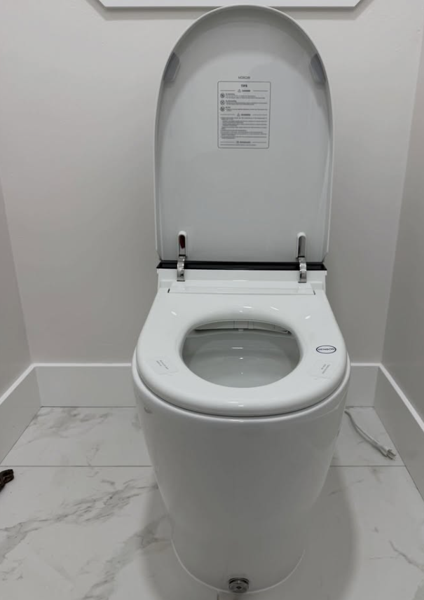

Plumber in Citrus Heights, CA
Citrus Heights has a wide mix of home ages, making leak repairs, drain service, fixture replacements and water-heater work common reasons to call a local plumber.
Fast help, clean work, straight answers.
We handle drain and sewer issues, water heaters, toilets and fixtures, pipe and leak repairs, valves, plumbing installations and select commercial work in Citrus Heights and nearby Sacramento-area communities.
Is same-day plumbing service available in Citrus Heights?
Same-day service is advertised for the Sacramento area and can be requested based on schedule and job location.
What kinds of jobs can I request?
Common requests include clogged drains, water-heater work, fixture and toilet replacement, leaks, piping, valves and installation projects.
Do you serve nearby areas too?
Yes. Straight Forward Plumbing serves Sacramento and surrounding areas. Use the service-area links below to explore nearby city pages.

Need plumbing help in Citrus Heights today?
Send the team a message with your plumbing issue and location to ask about same-day availability.